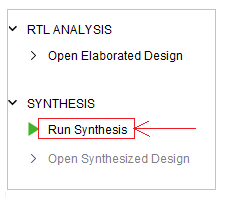
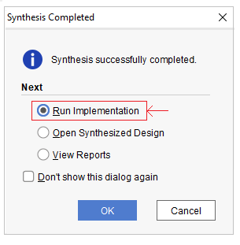
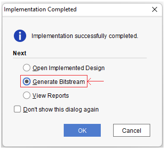
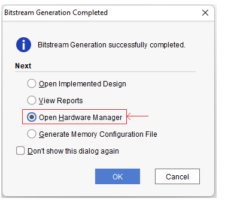
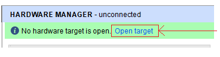
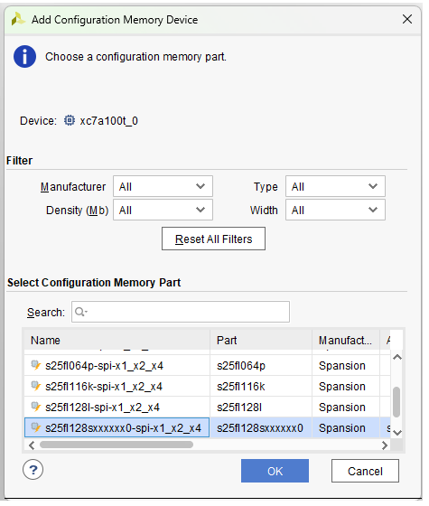
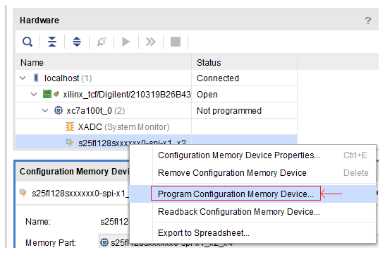
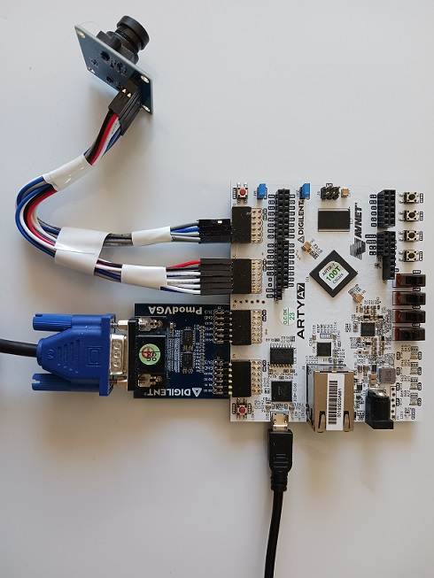
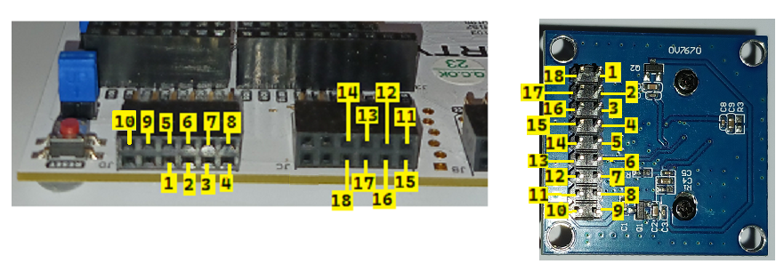

Getting Started: Running a Vision/AI Demo on Artix-7 FPGA
This guide walks through everything needed to see ztachip running: building the software, building the FPGA image, and loading and running the vision and AI demos on a Digilent Arty A7 board.
1. Software Build Procedure
1.1 Prerequisites (Ubuntu)
Install the required Ubuntu packages:
sudo apt-get install autoconf automake autotools-dev curl python3 \
libmpc-dev libmpfr-dev libgmp-dev gawk build-essential \
bison flex texinfo gperf libtool patchutils bc \
zlib1g-dev libexpat-dev python3-pip
pip3 install numpy1.2 Download and Build the RISC-V Toolchain
1.2.1 Option 1: Use the Prebuilt Toolchain
Download the prebuilt RISC-V toolchain.
Then extract it into /opt:
sudo tar -xzvf riscv.tar.gz -C /The toolchain will be installed under:
/opt/riscv1.2.2 Option 2: Build the Toolchain from Source
If you prefer to build the RISC-V GNU toolchain yourself:
export PATH=/opt/riscv/bin:$PATH
git clone https://github.com/riscv/riscv-gnu-toolchain
cd riscv-gnu-toolchain
./configure --prefix=/opt/riscv --with-arch=rv32im --with-abi=ilp32
sudo make1.3 Download ztachip
Clone the ztachip repository:
git clone https://github.com/ztachip/ztachip.git1.4 Build ztachip
Add the RISC-V toolchain to your path and build the ztachip compiler, file system, kernels, and software image:
export PATH=/opt/riscv/bin:$PATH
cd ztachip
cd SW/compiler
make clean all
cd ../fs
python3 bin2c.py
cd ..
make clean all -f makefile.kernels
make clean all1.5 MicroPython Integration (Recommended)
ztachip can run under MicroPython, providing a Python programming interface for accessing ztachip functionality.
See the MicroPython Programmer's Guide for more information.
To build ztachip with MicroPython:
git clone https://github.com/micropython/micropython.git
cd micropython/ports
cp -avr <ztachip installation folder>/micropython/ztachip_port .
cd ztachip_port
export PATH=/opt/riscv/bin:$PATH
export ZTACHIP=<ztachip installation folder>
make clean
make2. FPGA Build Procedure
The reference FPGA implementation uses Xilinx Vivado. The steps below create the Vivado project, build the FPGA image, and program it into the board's flash.
2.1 Installing Vivado WebPACK Edition
Vivado WebPACK edition is a free IDE for the Artix-7 FPGA family.
2.2 Create the Project File
Launch Vivado.
On the TCL console command line, issue the following commands:
cd <ztachip installation folder>/HW/examples/GHRD
set argv linux # For Linux Only
source create_project.tclA project file ztachip.xpr should be created after create_project.tcl has finished executing.
2.3 Build and Flash the FPGA Image
Open the Vivado project file ztachip/HW/examples/GHRD/ztachip.xpr.
Then start with the synthesis step as shown below.

After the synthesis step has been completed, Vivado will prompt you to continue with the implementation step. Choose the option and click OK.

After the implementation step has been completed, Vivado will prompt you to continue with the bitstream generation step. Choose the option and click OK.

After the bitstream generation step has been completed, Vivado will prompt you to open the Hardware Manager. Choose the option and click OK.

Make sure your board is connected to the PC with the USB cable provided in the Arty development package.
From the Hardware Manager, connect to the target as shown below.

On the left panel, click on the "Add Configuration Memory Device" menu option, then choose to create the flash device as shown below.

Then program the board as shown below. The image to be flashed is ztachip/HW/examples/GHRD/ztachip.runs/impl_1/main.bin.
If the file is not there, verify that the -bin option is selected under Project Settings/Bitstream, then rerun the bitstream generation step.

That's it. Your board's FPGA will be programmed with the new image automatically after a power reboot.
2.4 Support for Open-Source Toolchains
Open-source toolchains normally support only Verilog.
You can convert the ztachip RTL to Verilog using GHDL.
Install GHDL.
Then convert the RTL code from VHDL to Verilog with the command below.
cd <ztachip folder>/tools/ghdl
./convert.shAll VHDL code will be converted and combined into a single file, tools/ghdl/soc.v.
As an example of an all-Verilog project, create the Vivado project using create_project2.tcl instead.
3. Running the Demos
3.1 Preparing the Hardware
The reference design requires the following hardware components:
Attach the VGA and camera modules to the Arty A7 board as shown below.

Connect the camera module to the Arty A7 board as shown below.

3.2 Open the Serial Port
When running the ztachip MicroPython image, connect to the serial port provided through the Arty A7 USB interface.
Serial-port flow control must be disabled.
For example:
sudo minicom -w -D /dev/ttyUSB1> Note: After connecting to the serial port for the first time, reset the board by pressing the button next to the USB port. Wait for the green LED to turn on. The USB serial interface must be the first device to connect to USB before ztachip.
3.3 Download and Build OpenOCD
OpenOCD provides the JTAG connection used by the GDB debugger.
In this example, the program is loaded onto the board using GDB + JTAG.
Install the required packages:
sudo apt-get install libtool automake libusb-1.0.0-dev \
texinfo libusb-dev libyaml-dev pkg-configDownload and build OpenOCD:
git clone https://github.com/SpinalHDL/openocd_riscv
cd openocd_riscv
./bootstrap
./configure --enable-ftdi --enable-dummy
makeCopy the ztachip OpenOCD configuration files into the OpenOCD directory:
cp <ztachip installation folder>/tools/openocd/soc_init.cfg .
cp <ztachip installation folder>/tools/openocd/usb_connect.cfg .
cp <ztachip installation folder>/tools/openocd/xilinx-xc7.cfg .
cp <ztachip installation folder>/tools/openocd/jtagspi.cfg .
cp <ztachip installation folder>/tools/openocd/cpu0.yaml .3.4 Launch OpenOCD
Make sure the green LED below the reset button near the USB connector is on. This indicates that the FPGA has been configured correctly.
Then launch OpenOCD to provide the JTAG connection for GDB:
cd <openocd_riscv installation folder>
sudo src/openocd \
-f usb_connect.cfg \
-c 'set MURAX_CPU0_YAML cpu0.yaml' \
-f soc_init.cfgKeep OpenOCD running while using GDB.
3.5 Demo Preparation
The demo requires LLM model files to be available.
A TFTP server must be running on the PC Ethernet interface connected to the Arty A7 board.
Configure the PC Ethernet interface with the following IP address:
10.10.10.10Copy the following two model files into the TFTP server's download directory:
These files contain quantized versions of the LLM models.
See the Model Quantization Procedure for instructions on creating the quantized models.
3.6 Upload the Software Image with GDB
3.6.1 Bare-Metal Mode
To run ztachip without MicroPython integration, open another terminal and start GDB with the standalone ztachip software image:
export PATH=/opt/riscv/bin:$PATH
cd <ztachip installation folder>/SW/src
riscv32-unknown-elf-gdb ../build/ztachip.elf3.6.2 MicroPython Mode (Recommended)
To run ztachip with MicroPython integration, open another terminal and start GDB with the MicroPython firmware image:
export PATH=/opt/riscv/bin:$PATH
cd <MicroPython installation folder>/ports/ztachip_port
riscv32-unknown-elf-gdb ./build/firmware.elf3.7 Start the Image Transfer
From the GDB prompt, enter:
set pagination off
target remote localhost:3333
set remotetimeout 60
set arch riscv:rv32
monitor reset halt
load3.8 Run the Program
After the program has been successfully loaded, run it from the GDB prompt:
continueIf running in bare-metal mode, press any button to move between different vision/LLM demos.
If running in MicroPython mode, at the serial console, hit CTRL+E, then paste one of the Python programs from this folder and hit CTRL+D to run. Then hit any button to stop and return to the Python console.
A demonstration showing how to run the demo is available in this video.